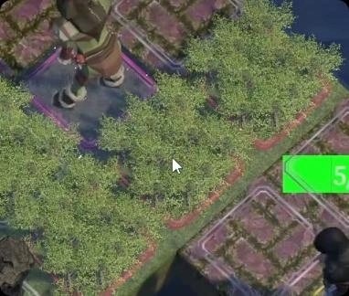
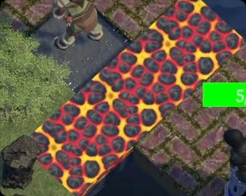

01项目与个人职责
《星壑：Astral Ravine》为战棋SRPG比赛项目，由4人小队在21天内完成基础玩法展示 Demo。我担任队长，参与部分玩法设计及程序开发。
玩法策划
提出地形改造机制，参与部分地形效果与角色技能设计。原始PDF配置表以黄色与红色分别标示本人参与的地形及技能设计。
Unity / C# 开发
实现格子地图、回合战斗、角色、技能、Buff、数值计算及玩家操作等功能，并制作地图与技能编辑工具。
团队协调与项目推进
负责开发排期、任务协调、版本推进及多系统联调，在比赛周期内完成 Demo 交付。
02地形改造的设计目标
开发周期只有21天，同时铺开装备、技能和天赋树等系统会增加设计与实现规模。因此，团队将重点放在已有地形系统的内容扩展，以及地形与其他系统的交互上。
设计原则是“简单清晰、作用明确”。我提出让主角以辅助友方为定位，通过增益和地形改造影响战局，使友方单位能够利用地形进行战斗。
- 01地形自身提供的效果
- 02地形与角色之间的联动
- 03不同地形之间的联动
03已实现的技能联动案例
主角通过【赐福】为弓箭手附加火属性攻击增益，弓箭手使用【万箭齐发】造成范围攻击，使受影响的草地灼烧并转化为火地形。以下为具体案例，不代表所有技能均采用这一转换规则。
- 步骤 01主角施加火属性增益
- 步骤 02弓箭手释放范围攻击
- 步骤 03草地转换为火地形


04项目复盘
开发调整
团队将“能否阻挡远程攻击”作为地形属性，使规则能够用于不同地形，并允许分别配置，便于实现与后续扩展。
当前不足
不同地形的视觉区分度不足，玩家难以迅速识别地形类型，并理解其对应效果。
改进方向
提升地形视觉反馈，拓展地形之间的交互，以及主角改造地形、敌方阵营利用地形的能力。Demo第三关的Boss战已体现其中一部分。
05完整项目说明
原始文档共4页，包含触发时机、地形效果、基础属性、角色技能配置与项目复盘。完整规则以原文为准。